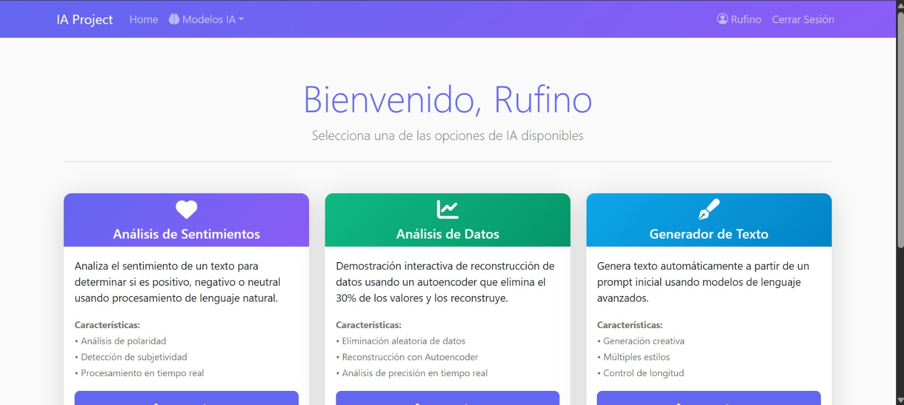
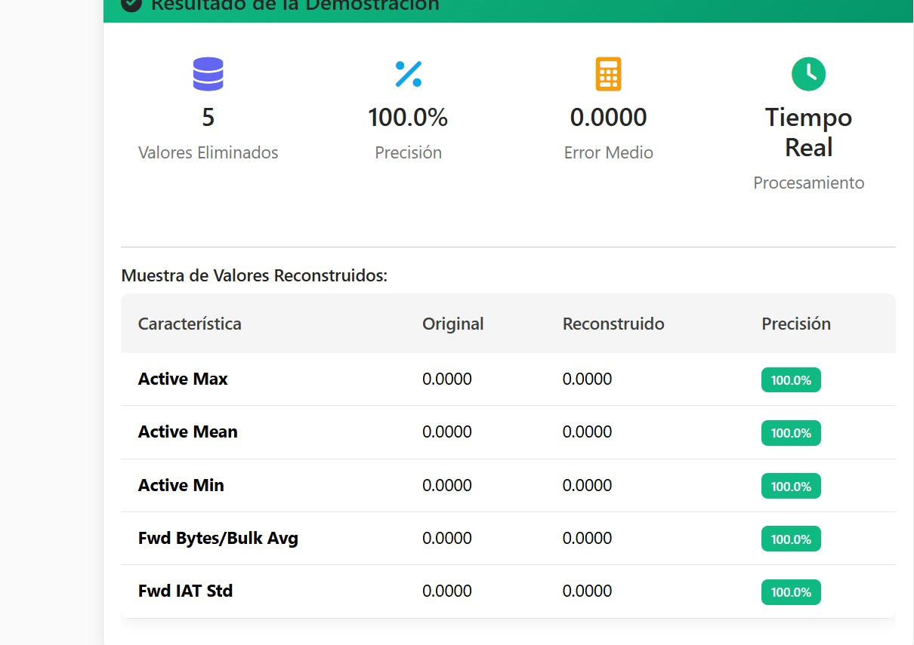
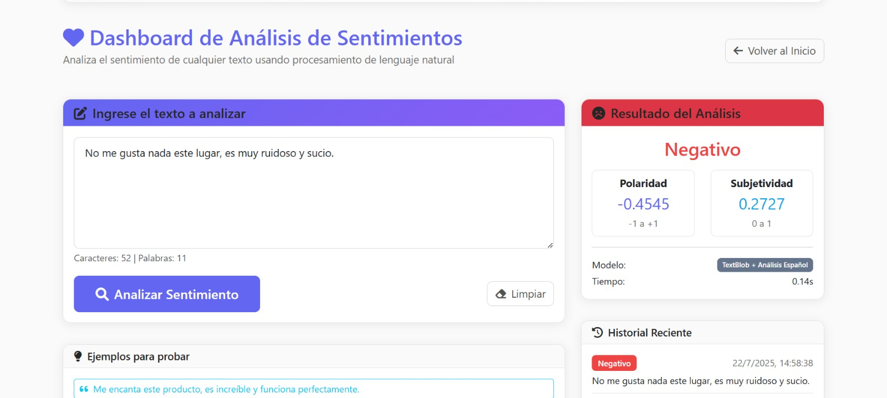
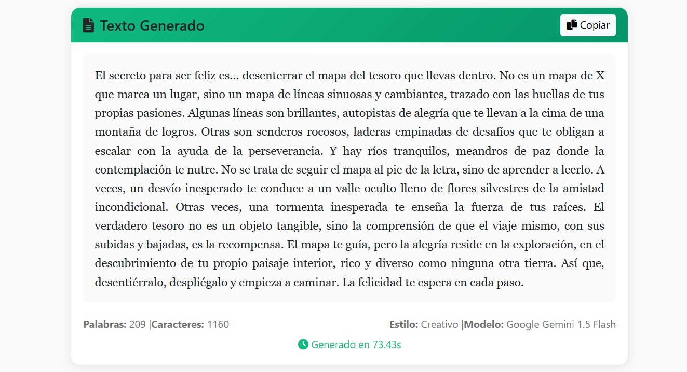

🤖 Sistema Inteligente de Análisis de Datos con IA
Definición y Contexto
Este proyecto es una aplicación web completa que implementa técnicas avanzadas de Inteligencia Artificial para el análisis de datos, replicando la metodología científica del paper "DeepLearning_Based_MissingData_Imputation (DMDI)" para la gestión de datos faltantes.
Sistema Inteligente de Análisis de Datos:
Permite reconstruir datos faltantes, analizar sentimientos y generar texto, integrando modelos de IA en un flujo automatizado y accesible vía web.
Alcances funcionales:
- Imputación de datos faltantes con autoencoders
- Análisis de sentimientos sobre textos
- Generación de texto con modelos LLM (Gemini)
Ámbitos de aplicación:
🏥 Salud
Gestión de historiales clínicos incompletos
📊 Finanzas
Reconstrucción de series temporales
🧬 Ciencia de datos
Preprocesamiento de datasets para ML
📝 Encuestas
Completar respuestas faltantes
💬 Opinión pública
Análisis de sentimientos en redes sociales
Estructura del Proyecto
📁 Proyecto/
├── 📁 backend/ # Servidor Flask + API REST
│ ├── app.py # Aplicación principal
│ ├── config_new.py # Configuración
│ ├── text_analysis.py # Análisis de sentimientos
│ ├── save_model.py # Entrenamiento de modelos
│ ├── requirements.txt # Dependencias Python
│ └── 📁 data/ # Datos del proyecto
│ ├── Data.csv # Dataset (76 características)
│ ├── Label.csv # Etiquetas de clasificación
│ └── schema.sql # Esquema de base de datos
├── 📁 frontend/ # Aplicación React
│ ├── package.json # Dependencias Node.js
│ ├── 📁 src/ # Código fuente React
│ └── 📁 public/ # Archivos públicos
├── 📁 models/ # Modelos entrenados de IA
│ ├── autoencoder.pth # Red neuronal (PyTorch)
│ ├── classifier.pkl # Random Forest
│ └── scaler.pkl # Normalizador de datos
└── 📁 docs/ # Documentación completa
└── README.md # Documentación detallada
Componentes y Arquitectura
🔗 Backend (Flask):
API RESTful para análisis, imputación y entrenamiento de modelos.
⚛️ Frontend (React):
Interfaz de usuario para cargar datos, visualizar resultados y consumir la API.
🧠 Modelos de IA:
Autoencoder (PyTorch), Random Forest (scikit-learn), integración con Gemini API.
🗄️ Base de datos:
MySQL para almacenamiento estructurado y persistencia de datos.
Instalación y Configuración
- Clonar el Repositorio
git clone <tu-repositorio> cd Proyecto - Configurar el Backend
cd backend python -m venv venv venv\Scripts\activate # Windows pip install -r requirements.txt - Configurar la Base de Datos
cd backend mysql -u root -p < data/schema.sql - Entrenar los Modelos
cd backend python save_model.py - Configurar el Frontend
cd frontend npm install
Ejemplo de Código (Entrenamiento y uso de Autoencoder)
# save_model.py - Entrenamiento de autoencoder para imputación de datos faltantes
import torch
import torch.nn as nn
import pandas as pd
from sklearn.model_selection import train_test_split
# Definición del autoencoder
class Autoencoder(nn.Module):
def __init__(self, input_dim):
super().__init__()
self.encoder = nn.Sequential(
nn.Linear(input_dim, 32),
nn.ReLU(),
nn.Linear(32, 16),
nn.ReLU()
)
self.decoder = nn.Sequential(
nn.Linear(16, 32),
nn.ReLU(),
nn.Linear(32, input_dim)
)
def forward(self, x):
encoded = self.encoder(x)
decoded = self.decoder(encoded)
return decoded
# Cargar datos y preprocesar
# ...
# Entrenamiento y guardado del modelo
# ...
Funcionalidades de IA
- 📊 Imputación de datos faltantes con autoencoder
- 💖 Análisis de sentimientos con NLP
- ✍️ Generación de texto con Gemini API
Ejemplos Prácticos y Capturas
A continuación se muestran ejemplos prácticos de las tecnologías y conceptos aprendidos:
📸 Captura 1: Dashboard del sistema
📸 Captura 2: Imputación de datos faltantes
📸 Captura 3: Análisis de sentimientos
📸 Captura 4: Generación de texto
Tecnologías y Herramientas
Lenguajes/Frameworks:
- Python
- Flask
- React
IA/ML:
- PyTorch
- scikit-learn
- TextBlob
- Google Gemini API
Base de datos:
- MySQL
Frontend:
- HTML
- CSS
- JavaScript
Recursos y Documentación
Ver Código Fuente Completo
Accede al repositorio completo con el sistema inteligente y aplicaciones de IA desarrolladas en la Semana 16.
📁 Contenido del Repositorio
-
Sistemas de IA
Implementaciones de algoritmos de inteligencia artificial
-
Modelos de Lenguaje
Integración y uso de Large Language Models (LLM)
-
Análisis de Datos
Scripts de procesamiento y análisis de datos con Python
-
Aplicaciones Web IA
Interfaces web para interactuar con sistemas inteligentes
-
Documentación Técnica
Guías de implementación y casos de uso de IA
Reflexión Personal
Desarrollar este sistema inteligente de análisis de datos me permitió integrar conocimientos de IA, desarrollo web y ciencia de datos. Comprendí la importancia de la gestión de datos faltantes y la potencia de los autoencoders para resolver problemas reales. La integración de modelos de lenguaje y la visualización de resultados en una interfaz web moderna me motivaron a seguir explorando la convergencia entre IA y desarrollo fullstack.